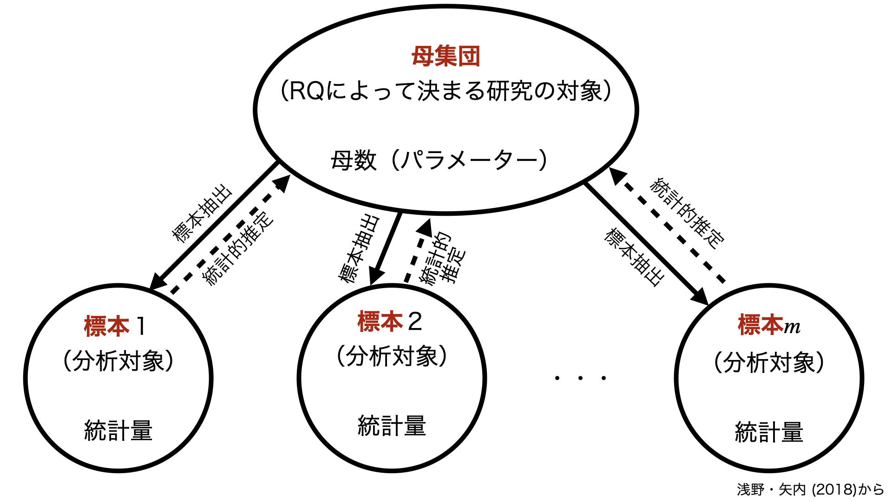
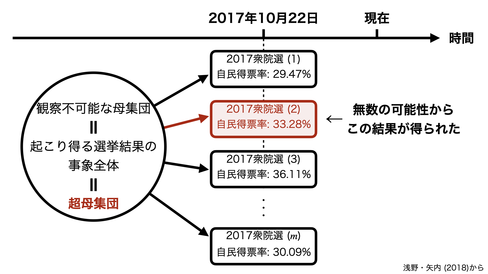
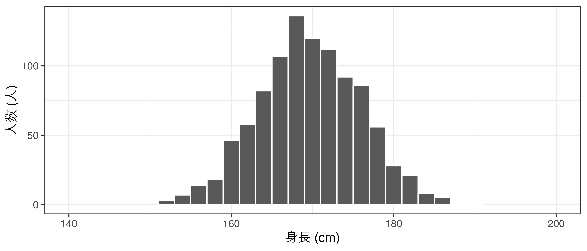
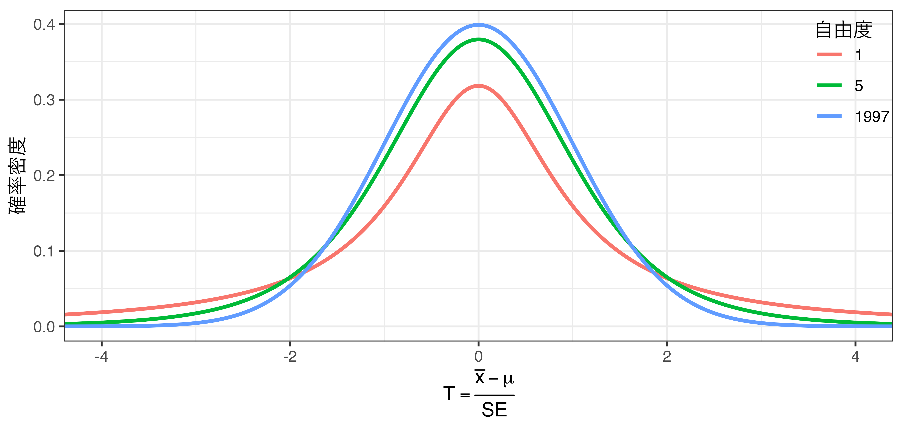
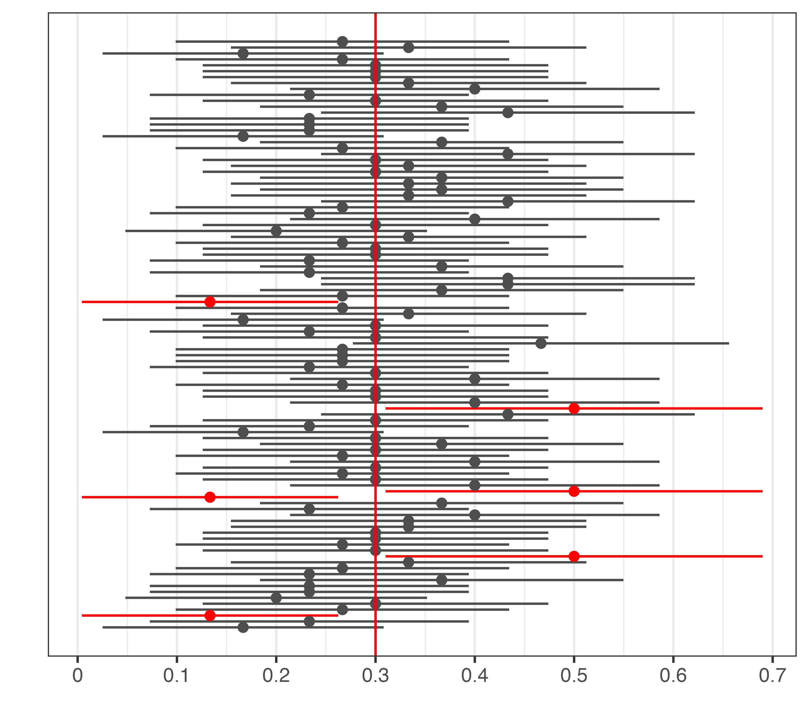

| 問い | 母集団 |
|---|---|
| 岸田内閣の支持率は? | 有権者全体 |
| 女性に人気のある大臣は誰か | 女性有権者全体 |
| 若者に人気のある政党は何か | 若者有権者全体 |
| 高槻市長の支持率は? | 高槻市における有権者全体 |
マクロ政治データ分析実習
第5回 統計的推定
宋 財泫
関西大学総合情報学部
2023-10-19
母集団と標本
知りたい対象は?
- 問い: 経済成長は国の民主化をもたらす。
- 研究の対象は世界におけるすべての国（約180）
- 問い: 日本において高学歴者は投票する傾向がある。
- 研究の対象は約1億2千万人の日本人
- 問い: 日本において高齢者の多い市区町村は投票率が高い。
- 研究の対象は日本の全市区町村（約1700）
- 母集団 (population): リサーチクエスチョンにおける研究の対象
問いが決まれば母集団も決まる
母集団における推論の例
- 岸田内閣の支持率は?
- 有権者全員 (約1億600万人)に内閣支持の有無を尋ね、支持する人の数を有権者数で割る。
- 女性に人気のある大臣は誰か
- 女性有権者全員 (約5300万人)に好きな大臣を尋ね、最も多い選択肢を計算する。
- 若者に人気のある政党は何か
- 18〜35歳の有権者 (約2300万人)に支持政党を尋ね、最も多い選択肢を計算する。
- 高槻市長の支持率は?
- 18歳以上の高槻市民 (約29万人)に濱田剛史市長の支持有無を尋ね、支持する人の数を有権者数で割る。
- 母集団は一般的に非常に大きいため、全対象への調査（全数調査）は困難
- 例) 全国民を対象とする2015年国勢調査の場合、調査費用は約720億円
標本の利用
標本 (sample): 母集団から抜き出された一部のこと
- 母集団は研究の対象であり、標本は分析の対象
- 標本を構成するケースの数は標本サイズ (sample size)と呼ばれ、一般的に \(n\) と表記する。
- 注意: 標本サイズ \(\neq\) 標本数
- 標本における内閣支持率(標本比率)から母集団の内閣支持率(母比率)を推定 (inference)
母数と統計量
- 母数 (parameter): 母集団における特徴
- 一つの値として存在するものの、未知の値
- 統計量 (statistics): 標本から得られたデータに対し、一定の計算ルールを適用して得られた値
- ルールの例) 「標本内の内閣支持者の数を標本サイズで割る」\(\rightarrow\) 標本比率
- 統計量は様々であり、母数の推定に使用されるものを推定量 (estimator)と呼ぶ
母集団と標本の関係

母数と統計量
一般的に母数はギリシャ文字、統計量はラテン文字で表記
- ケース数の場合、母集団の大きさは\(N\)、標本の大きさは\(n\)と表記する。
| 母数 | 統計量 |
|---|---|
| 母平均 (\(\mu\)) | 標本平均 (\(\bar{x}\)) |
| 母比率 (\(\pi\)) | 標本比率 (\(p\)) |
| 母分散 (\(\sigma^2\)) | 標本分散（\(s^2\)）・標本不偏分散 (\(u^2\)) |
| 母標準偏差 (\(\sigma\)) | 標本標準偏差（\(s\)）・標本不偏分散の平方根 (\(u\)) |
標本で母集団を推定することは可能か
内閣支持率が30%の場合、母集団において約3千万人が内閣を支持する。
- 標本サイズが3000である場合、標本は母集団の約0.0003%
- 極端な例だと、標本内の3000人全員が内閣を支持する可能性もあり
- このような危険性があるにもかかわらず、なぜ標本を使うことが許されるか。
標本抽出（sampling）
標本から母集団を推論するためには、母集団から適切な方法で標本を抽出する必要がある
- 例) 標本のほとんどが山口県長門市の居住者である場合、そこから得られた自民党の支持率は母集団を代表せず、偏り（bias）が生じる。
- 偏りをなくす抽出方法: 単純無作為抽出法
- 母集団に属するすべてのケースにおいて標本として抽出される確率が等しい
偏りをなくしても誤差は存在する
無作為抽出された標本の平均（標本平均）と母平均が一致するケースはほとんどあり得ず、ズレが存在する。
- 偏りのない標本における標本平均と母平均のズレ: 誤差 (error)
偏り \(\neq\) 誤差
標本平均の場合、偏り（bias）も誤差（error）も母平均と標本平均とのズレを意味する。
- しかし、バイアス \(\neq\) エラー
- 母集団からの抽出 \(\rightarrow\) 標本平均の計算を繰り返す場合
- 偏りのある標本の場合、母平均と大きく離れた値が得られる
- 長門市から抽出を行い、標本平均の平均の計算を繰り返しても母平均（日本人全体の特徴）から大きく離れた値が得られる。
- 偏りのない標本の場合、母平均と大きく離れた値が得られるケースがほとんどない。
- ズレが小さい範囲内（=いわゆる「誤差の範囲内」）に収まる
- 偏りのある標本の場合、母平均と大きく離れた値が得られる
全数調査の場合
標本から母集団を推論することが「統計的推定」の目的
- 母集団のデータがあれば、推定は不要?
- 研究の対象が都道府県、または選挙区の場合、これらのデータを入手することは可能
- 約300選挙区のデータ = 母集団?
- 一般的に研究対象のケースがすべて揃ったデータでも、それを母集団として扱うことはない
- 今回得られた300選挙区のデータは無数の可能性の一つとして考える。
超母集団（superpopulation）を想定
- 超母集団は観察不可能であり、我々が母集団と考えるものも超母集団から抽出された一つの事象（event）に過ぎない
- 観察された値でなく、そのような値を生み出すメカニズムと、そのメカニズムの中心にある未知の母数についての知識を得ることが目的
母集団と標本の関係

標本分布
標本を選ぶ方法は無限に存在する
- 例1）母集団が3人（A, B, C）で、 \(n\) = 2の標本を無作為抽出する方法
- 計9通り（\(3^2\) = 9）\(\Rightarrow\) {A, A}、{B, B}、{C, C}、{A, B}、{B ,A}、{A, C}、{C, A}、{B, C}、{C, B}
- 注意
- 同じ人がもう一度抽出されることがあり得る：復元抽出
- {A, C}と{C, A}は異なる組み合わせ：順序あり
- 「非復元抽出 + 順序なし」なら計3通り（{A, B}、{A, C}、{B, C}）
- 例2）母集団が10人で、 \(n\) = 4の標本を無作為抽出する方法
- \(10^4 = 10000\)
- 例3）1億2千万人から \(n\) = 3000の標本を無作為抽出する方法
- 有限ではあるが、実質、無限と考えられる
標本分布
- 母集団が10人で、 \(n\) = 4の標本を選ぶ方法は10000通りであり、そこから得られる統計量（標本平均など）は一致せず、分布する（=ばらつきがある）。
- 標本分布: 一定の標本サイズを保ちながら理論的に考えられるすべての組み合わせで標本を抽出したとき、そこから得られる統計量の分布
- 統計量と母数の間を確率で繋いでくれるものであり、統計的推定の仕組みを理解するための最重要概念
- 最も頻繁に用いられる統計量は標本平均であり、標本分布と言えば標本平均の分布を意味することが多い。
標本分布の例
学生5人（母集団）から \(n\) = 2の標本を無作為抽出し、身長を測定（25通り）
- Rの
var()関数は\(n-1\)で割る標本不偏分散であるため、\(\frac{n-1}{n}\)をかけて母分散を算出する。
| 標本ID | 組み合わせ | 標本平均 | 標本不偏分散 |
|---|---|---|---|
| 1 | {A, A} | 151.00 | 0.00 |
| 2 | {A, B} | 160.00 | 162.00 |
| 3 | {A, C} | 167.00 | 512.00 |
| 4 | {A, D} | 155.50 | 40.50 |
| 5 | {A, E} | 161.00 | 200.00 |
| 6 | {B, A} | 160.00 | 162.00 |
| 7 | {B, B} | 169.00 | 0.00 |
| 8 | {B, C} | 176.00 | 98.00 |
| 9 | {B, D} | 164.50 | 40.50 |
| 10 | {B, E} | 170.00 | 2.00 |
| 11 | {C, A} | 167.00 | 512.00 |
| 12 | {C, B} | 176.00 | 98.00 |
| 13 | {C, C} | 183.00 | 0.00 |
| 14 | {C, D} | 171.50 | 264.50 |
| 15 | {C, E} | 177.00 | 72.00 |
| 16 | {D, A} | 155.50 | 40.50 |
| 17 | {D, B} | 164.50 | 40.50 |
| 18 | {D, C} | 171.50 | 264.50 |
| 19 | {D, D} | 160.00 | 0.00 |
| 20 | {D, E} | 165.50 | 60.50 |
| 21 | {E, A} | 161.00 | 200.00 |
| 22 | {E, B} | 170.00 | 2.00 |
| 23 | {E, C} | 177.00 | 72.00 |
| 24 | {E, D} | 165.50 | 60.50 |
| 25 | {E, E} | 171.00 | 0.00 |
| 平均 | 166.80 | 116.16 |
「偏りがない」ことの意味
不偏性（unbiasedness）: 実現し得る統計量の平均値が母数と一致
- 椎定量として望ましい性質の一つ
不偏推定量（unbiased estimator）: 不偏性のある推定量
- 例) 標本平均の平均は母平均と一致（\(\mathbb{E}(\bar{x}) = \mu\)）するため、標本平均（\(\bar{x}\)）は母平均（\(\mu\)）の不偏推定量
- ただし、これは標本抽出を繰り返し行えば平均的に正しい値が得られるという性質を意味し、分析に用いる標本（手元の標本）にズレが存在しないことを保証するわけではない。
- 標本不偏分散（\(u^2\)）も母分散の不偏推定量（\(\mathbb{E}(u^2) = \sigma^2\)）
- 標本分散（\(s^2\)）の計算式は母分散（\(\sigma^2\)）と同じ\(\frac{1}{n}\sum (x - \bar{x})^2\)であるが、これは母分散の不偏推定量ではない。母分散（\(\sigma^2\)）の不偏推定量は標本不偏分散（\(u^2\)）であり、標本不偏分散（\(u^2\)）は\(\frac{1}{n}\)の代わりに\(\frac{1}{n - 1}\)を使用する。
- 不偏性の詳細はhttps://www.jaysong.net/notes/simulation/consistency.htmlを参照
\(u\)は不偏推定量ではない！
標本不偏分散\(u^2\)は母分散の不偏推定量ではあるが、\(u\)は母標準偏差の不偏推定量ではない。したがって、\(u\)は混同を避けるために「標本不偏標準偏差」でなく、「標本不偏分散の平方根」と呼ばれる。母標準偏差の不偏推定量はもっと複雑な計算が必要。
大きい母集団で考える
成人男性1000人の身長データ（架空のデータ）
- この1000人が母集団であると仮定する。
母集団の分布

\(n = 10\) の無作為抽出を繰り返す
\(n = 10\)の標本を無作為抽出し、標本平均を計算することを500回繰り返す。
- 計算された500個の標本平均を保存し、ヒストグラム化する。
- 1001行のコードが必要
sample_mean <- c() # 空ベクトルの作成
sample001 <- sample(height_df$Height, 10)
sample002 <- sample(height_df$Height, 10)
sample003 <- sample(height_df$Height, 10)
...
sample500 <- sample(height_df$Height, 10)
sample_mean[1] <- mean(sample001)
sample_mean[2] <- mean(sample002)
sample_mean[3] <- mean(sample003)
...
sample_mean[500] <- mean(sample500)標本平均の分布 (\(n = 10\))
標本平均の分布から分かること
- 標本平均の分布は左右対称のベル(鐘)形（正規分布）\(\leftarrow\) 中心極限定理
- 標本平均の平均値は母平均と同じ \(\rightarrow\) 標本平均は母平均の不偏推定量
- 標本平均のばらつきは母集団のばらつきよりも小さい（母集団より狭い範囲に分布する）
- 標本平均のばらつき（= \(\bar{x}\)の標準偏差）は
\[ \mbox{SE}(x) = \mbox{SD}(\bar{x}) = \sqrt{\frac{\sigma^2}{n}} \]
- 母分散（\(\sigma^2\)）が約6.2、標本サイズ（\(n\)）が10であるため、標準誤差は\(\frac{6.2}{\sqrt{10}} \simeq 1.96\)（標本平均の標準偏差は約1.9）
- 標本サイズが大きくなるほど、標本平均と母平均のズレは小さくなり（大数の弱法則）、標本平均の分散/標準偏差は小さくなる。
- 一致性（consistency）：標本のサイズを大きくするほど、一つの標本から得られる統計量が母数の近くの値をとる確率が大きくなる。
- 一致性は不偏性とともに、推定量の望ましい性質の一つ
- 詳細は https://www.jaysong.net/notes/simulation/consistency.html
標本平均の分布 (\(n = 50\))
サンプルサイズが大きいほど、標準誤差も小さくなる（標本平均の平均値はいずれも約170.1）。

母平均の推定と信頼区間
問題設定
2021年9月に行われた有権者調査から測定された日本維新の会に対する感情温度（0度 \(\sim\) 100度）
# A tibble: 2,746 × 4
ID Female Age Temp_Ishin
<dbl> <dbl> <dbl> <dbl>
1 1 0 44 NA
2 2 1 32 50
3 3 1 53 20
4 4 1 22 0
5 5 1 27 NA
6 6 1 28 NA
7 7 0 28 30
8 8 1 45 NA
9 9 1 33 50
10 10 0 30 NA
# ℹ 2,736 more rows日本人全体における感情温度は?
- 標本平均は母平均の一致推定量であるため、母集団（日本人全体）における維新に対する感情温度の平均値（母平均）は約42.7度であると考えられる。
点推定と区間推定
- 「母平均は42.7度だろう」 \(\rightarrow\) 点推定（point estimation）
- しかし、もう一回標本抽出を行えば、標本平均は変わる可能性が高い。
- もう一回、調査を行えば、39や44なども出るかも知れない。
- 今回得られた標本平均42.7は無数の組み合わせの中の一つから得られた結果に過ぎない。
- 「42.7度はどの程度確かな推定か」 \(\rightarrow\) 推定における不確実性に注目
- 「母平均はXX度以上、YY度以下である」 \(\rightarrow\) 区間推定（interval estimation）
- 標本平均の不確実性は…?
標準誤差: 不確実性の指標
標本平均（\(\bar{x}\)）の標準偏差（SD）は
\[ \mbox{SD}(\bar{x}) = \sqrt{\frac{\sigma^2}{n}} = \frac{\sigma}{\sqrt{n}} = \mbox{SE}(x) \]
- ただし、\(\sigma\)は未知の母数であるため、\(\sigma\)の代わりに\(u\)（標本不偏分散の平方根）を使用（
sd()関数）- Rの
sd()関数は「標本不偏分散の平方根」の関数 - 母標準偏差を求める場合は
sd(ベクトル) * sqrt((標本サイズ - 1) / 標本サイズ)で計算
- Rの
- 標準誤差 (standard error; SE): \(\mbox{SE} = \sqrt{\frac{u^2}{n}} = \frac{u}{\sqrt{n}}\)
- \(\mbox{SD}(\bar{x})\)の推定値として\(\mbox{SE}(x)\)を用いる。
- 通常、標本は一つしかない（=\(\bar{x}\)が一つしかない）ため、\(\mbox{SD}(\bar{x})\)は計算できない。
確率分布の例) \(t\)分布
標準誤差を用い、標本平均を以下のように変形したものを\(T\)統計量と呼ぶ。
\[ T = \frac{\bar{x} - \mu}{\mbox{SE}(x)} \]
- \(T\)は\(t\)分布という確率分布に従う。
- \(t\)分布は0を中心に左右対称のベル (bell)型確率分布
- \(t\)分布の性質は既知であるため、様々な活用が可能となる。
- \(t\)分布は自由度 (degree of freedom; df)によって形が変わる。
- 自由度が\(\infty\)になると\(t\)分布は標準正規分布と一致する。
- 標本平均の区間推定の場合、自由度は\(n-1\)
- 今回の例の場合、自由度は1997 (= 1998 - 1)
- 自由度が小さいほど、両端の裾が厚い。
- 確率分布における面積は必ず1 (= 100%)
- 左右対称で\(T\)の\(\bigcirc\bigcirc\)%が入る区間を調べる。
自由度と\(t\)分布
区間の調べ方
\(T\)が95%収まる範囲を調べるためには、\(t\)分布における下限と上限を計算する。
qt(p, df)で計算可能。- 自由度
dfの\(t\)分布において\(t = \bigcirc\bigcirc\)なら\(t < T\)の領域の面積がp\(\times\) 100%となる、\(t\)の値を計算
- 自由度

母平均\(\mu\)の95%信頼区間の求め方
- \(-1.961143 \leq T \leq 1.961143\)
qt(0.025, df = 1997)とqt(0.975, df = 1997)で計算
- \(-1.961143 \leq \frac{\bar{x} - \mu}{\mbox{SE}(x)} \leq 1.961143\)
- \(-1.961143 \cdot \mbox{SE}(x) \leq \bar{x} - \mu \leq 1.961143 \cdot \mbox{SE}(x)\)
- \(-1.961143 \cdot \mbox{SE}(x) - \bar{x} \leq -\mu \leq 1.961143 \cdot \mbox{SE}(x) - \bar{x}\)
- \(-1.961143 \cdot \mbox{SE}(x) + \bar{x} \leq \mu \leq 1.961143 \cdot \mbox{SE}(x) + \bar{x}\)
- \(\bar{x} - 1.961143 \cdot \mbox{SE}(x) \leq \mu \leq \bar{x} + 1.961143 \cdot \mbox{SE}(x)\)
- \((1 - \alpha) \cdot 100\)%信頼区間を計算する場合 (95%の場合、\(\alpha\)は0.05)
qt()内で0.025、0.975の代わりに\(\alpha / 2\) と \(1 - (\alpha / 2)\)を使用
- 標本サイズ\(n\)における母平均の\((1 - \alpha) \cdot 100\)%信頼区間
- \(\bar{x} + t_{n - 1, \alpha / 2} \cdot \mbox{SE}(x) \leq \mu \leq \bar{x} + t_{n - 1, 1 - (\alpha / 2)} \cdot \mbox{SE}(x)\)
- 標本サイズ（\(n\)）、標本平均（\(\bar{x}\)）、標本不偏分散（\(u^2\)）があれば計算可能
Rによる信頼区間の推定 (1)
Rによる信頼区間の推定 (2)
t.test(ベクトル名, conf.level = 区間)で推定
t.test()の後ろに$conf.intを付けると、信頼区間のみ出力- 95%信頼区間の場合、
conf.levelは0.95（既定値）
50%信頼区間
95%信頼区間の意味
- 間違った解釈: 「母数がこの区間に含まれている確率が95%である。」
- 正しい解釈: 「95%の95%信頼区間に母数が含まれる。」
# pop_vecを母集団とした場合、母平均は0.3
# n = 30の標本抽出を100回行う
sample1 <- sample(pop_vec, 30)
sample2 <- sample(pop_vec, 30)
sample3 <- sample(pop_vec, 30)
...
sample100 <- sample(pop_vec, 30)
# それぞれの標本から95%信頼区間を求める
t.test(sample1, conf.level = 0.95)
t.test(sample2, conf.level = 0.95)
t.test(sample3, conf.level = 0.95)
...
t.test(sample100, conf.level = 0.95)
95%信頼区間の意味 (続き)
今回の例
- 日本人の中から無作為に1998人を抽出し、日本維新の会に対する感情温度を測定する。
- 95%信頼区間を求める。
- 1 \(\sim\) 2の作業を1万回繰り返す（できれば無限回）
- 以上の手順で1万個の95%信頼区間が得られ、その内、約9500個の95%信頼区間には母平均（=日本人全体における日本維新の会に対する感情温度の真の平均値）が含まれる。
- 一方、残りの約500個の95%信頼区間は母平均を含まない。
なぜ「95%」か
- 理論的な根拠はなく単なる慣習に過ぎない。
- 他にも使われるのは90%、99%、99.9%などがあるが、50%でも、97%でも良い。
- ただし、変なものを使うと突っ込まれるかも知れない。